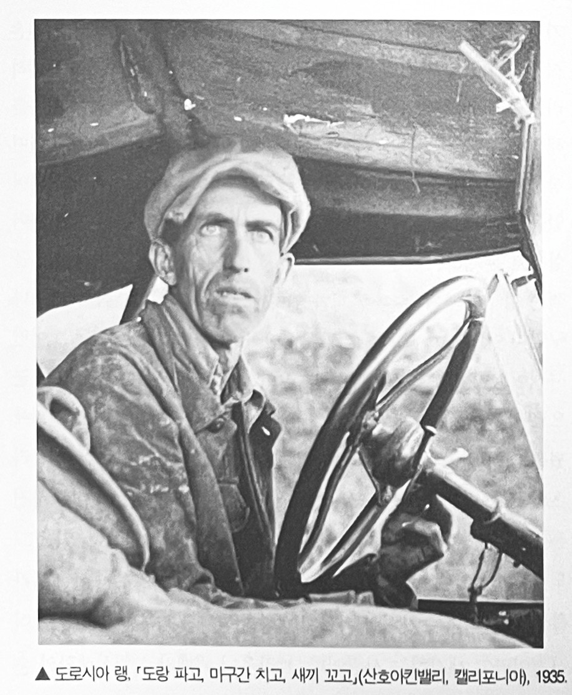
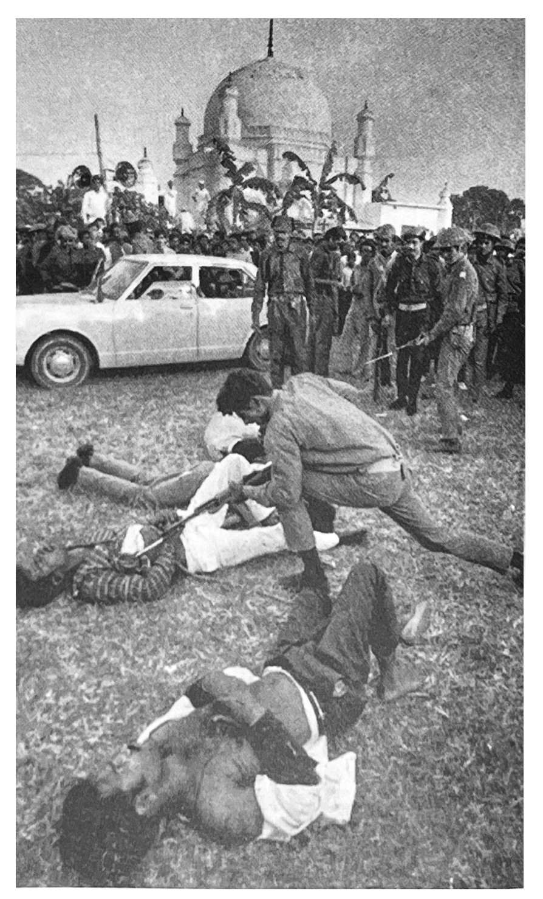

사진이 발명된 1839년 이래로 모든 것이 사진에 담겼거나, 혹은 그렇게 여겨지고 있다. 플라톤의 동글에 갇혀 지내던 우리의 상황, 우리의 세계를 뒤바꿔버린 것은 바로 이처럼 만족할 줄 모르는 사진의 시선이다. 바라보는 방식 자체를 새로 가르쳐준 사진은 무엇이 볼 만한 가치가 있는가, 우리에게 관찰할 권리가 있는 것은 무엇인가 등을 둘러싼 관념 자체도 바꿔버렸고, 더 넓혀줬다. 바라본다는 것의 근본 원리, 좀더 중요하게는 바라본다는 것의 윤리를 말이다. 결국 사진이 품었던 계획의 가장 웅대한 결과를 꼽자면, 우리로 하여금 세계의 모든 것을 우리 머릿속에 붙잡아 둘 수 있다고 생각하게끔 만든 것이다. 모든 이미지를 한데 끌어 모으기만 하면 된다고 말이다.
사진을 수집한다는 것은 세계를 수집한다는 것이다. 영화나 TV프로그램은 화면을 밝히다가도 깜박거리다 곧 사라져 버린다. 그렇지만 스틸 사진이 등장한 이래로 이미지는 일종의 오브제가 됐다. 게다가 가볍고 싸게 만들 수도 있으며, 쉽게 휴대, 적재, 보관할 수 도 있다.
우리가 현대적이라고 알고 있는 분위기를 만들어냈을뿐 아니라 실제로 사진은 포착된 경험이며, 카메라는 가장 이처럼 경험을 포착해 두려는 심리을 가장 이상적으로 이뤄주는 의식의 도구이다.
사진을 찍는다는 것은 사진에 찍힌 대상을 전유한다는 것이다. 그러니까 자기 자신과 세계가 특정한 관계를 맺도록 만드는 것인데, 이 과정을 통해서 마치 자기가 어떤 지식을 얻은 듯, 그래서 어떤 힘을 얻은 듯 느낀다는 것이다.
책에 실린 사진은 이미지의 이미지이다. 그렇지만 사진 자체가 인쇄[인화]되고 잘 다듬어진 대상인 덕택에, 아무리 책에 복제한다고 해도 사진은 회화가 책에 복제될 때보다는 원래의 본질적인 특성을 훨씬 덜 잃는다.
알프레드 스티글리츠와 폴 스트랜드처럼 수십 년에 걸쳐 도저히 잊기 힘든 뛰어난 사진을 찍어냈던 훌륭한 이미지의 거장조차도 우선은 "저쪽에 있는" 그 무엇을 보여주고 싶어했다. 이렇게 보자면 이런 거장도 즉석 카메라를 들고 다니며 수첩처럼 손쉽게 재빨리 뭔가를 기록할 수있는 것이 사진이라고 생각하는 사람이나, 브라우니 카메라로 일상생활의 순간을 찍어 추억하려는 사진광과 별다를 바 없다.
사진작가는 사진이 어떻게 보여야 할지를 결정해야 할뿐만 아니라 자기가 선호하는 노출 방식이 있기 때문에, 피사체에 특정한 기준을 들이대기 마련이다. 카메라는 현실을 해석하는 것이 아니라 있는 그대로 포착한다는 생각도 존재하지만, 사진도 회화나 데생처럼 이 세계를 해석하기는 마찬가지다. 자아의식을 싹 없앤 채 비교적 별다른 생각 없이 아무것이나 사진에 담는다해도, 사진을 찍는 행위 자체에 내재된 뭔가를 가르치려는 태도는 줄어들지 않는다. 사진으로 기록을 남기는 행위의 수동성(그리고 편재성), 바로 이것이야말로 사진이 우리에게 건네주는 '메시지'이자 사진이 드러내놓는 공격성이다.
1935년 뉴딜 정책의 일한으로 출범한 농업안정국(Farm Security Administration)은 원래 농민들에 대한 재정 지원을 임무를 띤 부서였다. 그러나 스트라이커(Roy Stricker, 1893~1975)의 주도하에 농업안정국 산하 사진단이 결성된 뒤부터는 랭(Dorothea Lnage, 1895~1965)과 에반스(Walker Evans, 1903~1975)처럼 뛰어난 사진작가들의 활동부대가 됐다. 1942년 해체될 때까지 이들이 찍은 사진은 무려 27만 2천점이었는데, 이 초대형 사진 컬렉션은 당대 지식인들에게 큰 영향을 끼쳤다.
사진은 더 이상 실재하지 않는 과거를 상상적으로 소유할 수 있도록 해줬고, 사람들이 잘 알지도 못하는 공간까지 갈 수 있도록 해줬다. 사진이 현대의 가장 독특한 활동, 즉 관광과 나란히 발전한 것도 그래서이다. 현대가 시작되자 평소의 생활공간을 떠나 정기적으로 짧게 여행 다니는 사람들이 유례없이 많아졌는데, 즐거운 시간을 보내려 여행을 떠나면서 카메라를 갖고 가지 않는다는 것은 자연스럽지 않은 일처럼 여겨졌다. 사진이야말로 자신이 진짜로 여행을 떠났고, 일정대로 잘 지냈으며, 정말 즐거웠다는 점을 확실히 증명해 줄 것이었기 때문이다.
1950~60년대에는 달러를 싸들고 다니며 속물 근성에 푹 찌들어 버릇없이 구는 미국인 관광객 이야기가 안줏거리였다면, 1970년대 초에는 엔화 가치가 과대 평가되는 기적 덕택에 감옥같은 섬에서 풀려 나와 양쪽 엉덩이에 각각 한 대씩 카메라 두 대를 넣고 다니며 신기할 만큼 집단으로 행동하는 일본인 관광객 이야기가 안줏거리였다.
호르스트 파스 미셀 로랑, '적의 협력자로 의심받고 총검으로 고문당하는 남자들, (다카, 파키스탄), 1972
원래 사진을 찍는다는 것은 상황에 개입하지 않는 활동이다. 가솔린통에 다가가는 베트남 승려, 몸통에 양팔이 묶인 이적행위자를 총검으로 찌르는 뺑골의 사진 등 인상적일 만큼 대성공을 거둔 동시대 포토저널리즘이 공포감을 자아내는 이유는 부분적으로 사진작가들이 다음과 같은 인식, 즉 사진이냐 살아있는 피사체냐를 선택해야 하는 상황에서 사진을 선택하는것도 타당하다는 인식을 갖게 됐기때문이다. 상황에 개입하면 기록할 수 없고, 기록하면 상황에 개입할 수 없다. 지가 베르토프의 위대한 영화 '카메라를 든 사나이'[4]는 사진작가의 이상적인 이미지를 보여줬다.
사진을 찍는 행위는 남을 훔쳐보며 성욕을 느끼는 관음증처럼 때로는 은밀하게 때로는 노골적으로, 현재 일어나고 있는 상황을 더욱 부추키는 방법이다. 사진을 찍는다는 것은 대상 그 자체, 지금 모습 그대로 변함없이 존재하는 대상에 관심을 기울이는 행위이며, 사진으로 찍어놓아야 할 만큼 그 피사체를 흥미롭게 만들어주는 그 무엇인가와 (예컨대 남에게는 고통이나 불행이더라도 재게는 흥미로움을 주는 상황) 공모하는 행위인것이다.
"사진을 찍는 것은 정말 못된 짓 같다는 생각이 늘 드는데, 내가 좋아하는 것 중 하나가 바로 못된 짓이다"라고 다이안 아버스는 말한 적이 있다. 그리고 "처음 사진을 찍었을 때 내 자신이 퍽 심술굿다는생각이 들었다." 아버스의 이 유명한 표현대로라면, 평판도 나쁘고 사람들이 금기시하며 주변적이기까지 한 피사체를 쫒아다녀야 하는 전문 사진작가는 못된 사람으로 여겨질 수도 있으리라. 그런데 사진 촬영의 정확히 어떤 면이 그토록 고약하다는 말일까? 어떤 전문 사진작가가 카메라 뒤에 설 때마다 자주 성적 환상을 느낀다고 가정해 보자. 이럴 경우에는 그런 환상이 그 상황에 어울리지도 않거니와 부적절하나 고약한 행위이리라.
사람들이 총알 대신에 필름을 사용하게 된 상황은 수렵 여행지였던 아프리카 동부가 사진촬영 여행지로 변해버린 상황과 일맥상통한다. 이제 사냥군들은 윈체스터 소총 대신에 하셀블라드를 들고 다니며, 총구를 겨냥하기 위해서 망원경을 들여다보는 대신에 피사체를 프레임 속에 제대로 넣기 위해서 뷰파인더를 들여다본다.
우리는 두려움에 빠질 때 총을 발사한다. 그렇지만 향수에 젖을 때면 사진을 찍는다.
오늘날은 향수를 느낄 수 밖에 없는 시대이다. 그리고 사진이 이 향수를 적극적으로 부추기고 있다. 사진은 애수가 깃들여 있는 예술, 황혼의 예술이다. 사진에 담긴 피사체는 사진에 찍혔다는 바로 그 이유로 비애감을 띠게 된다. 추하거나 기괴한 피사체조차도 사진작가의 눈길이 닿으면 그때부터 고귀해지기에 감동을 줄 수 있다. 아름다운 피사체라면 이미 오랜 세월을 보냈거나 소약해졌다거나 더 이상 존재하지 않는다는 이유로 애처로운 감정을 자아내는 대상이 될 수도 있다.
모든 사진은 메멘토 모리1이다. 사진을 찍는다는 것은 다른 사람(또는 사물)의 죽움, 연약함, 무상함에 동참하는 것이다. 그런 순간을 정확히 베어내 꽁꽁얼려 놓는 식으로, 모든 사진은 속절없이 흘러가 버리는 시간을 증언해 준다.
사진은 가장 직접적이고 실용적으로 욕망을 부추길 수 있다. 욕망에는 역사가 없다. 적어도 매순간 확연히 순간적으로 겪게되는 것이 욕망이다. 욕망은 무위식적으로 발생하며, 그런 점에서 추상적이다. 그렇지만 도덕적 감정은 역사, 그것도 구체적인 모습을 갖추고 있으며, 늘 특정한 상황에 놓여 있는 역사에 뿌리를 박고 있다. 따라서 욕망을 일깨우는 데 사진을 사용할 경우와 양심을 일깨우는 데 사진을 사용할 경우, 이 각각의 경우에는 거의 정반대의 법칙이 적용된다. 의식을 고조시키는 이미지는 주어진 역사적 상황과 늘 관련이 있는 법이다. 훨씬 더 일반적인 이미지일수록 그 유용성도 훨씬 더 감소되는 듯싶다.
움직이는 이미지보다는 사진이 기억하기 훨씬 쉽다. 사진은 시간의 흐름이 아니라 시간의 어느 한 순간을 깔끔하게 포착 해 놓은 것이기 때문이다. 테레비젼이 흐려보내는 이미지는 신중히 선택된 것이 아니다. 그래서거 뒤의 이미지가 앞의 이미지를 곧장 지워버리곤 한다. 그러나 스틸 사진은 어떤 순간을 특권화해 놓은 것으로서, 그 순간을 계속 간지한 채 몇 번이고 다시 볼 수 있는 얇은 사물로 뒤바꿔 버린다. 베트남 전쟁 당시 전쟁의 만행을 수백 시간 보여준 텔리베젼보다 훨씬 더 반전 여론을 들끓게 만들었던 것은 아마도 1972년 세계 모든 신문 제 1면을 장식햇던 사진, 즉 미군의 네이팜탄에 맞은 뒤 두 팔을 벌린채 고통으로 울부짖으며 도로로 뛰어나오던 어느 벌거벗은 남베트남 어린아이의 정면 사진이었을 것이다.

1972년 6월 8일, 남베트남군의 공군기가 자국민에게 네이팜을 투하하는 큰 실수를 저지렀다. 당시 현장을 지나가던 우트(Huynh Cong Ut, 1951~ )는 현장에서 벗어나가 위해 갈팡질팡 마을에서 뛰쳐나오던 마을 주민들의 모습을 카메라에 담기 시작했다. 그때까지만 해도 우트는 자신이 찌든 사진 중의 하나 '전쟁의 공포' 가 풀리처 상을 받으리라고는 꿈도 꾸지 않았을 것이다. 그리고 공포로 가득 찬 한 소녀(당시 9살)의 얼굴 표정이 고스란히 들어가 있는 이 사진이 미국 내 반전운동을 고조시키는 또 하나의 될 것이라는 것도.....
한 사건이 어떤 의미를 갖게 되더라도, 정확히 말해서 사진으로 찍을 만한 가치가 있는 그 무엇인가가 되더라도, 그사건을 사건으로 만들어주는 결정적인 요소는 이데올로기이다. 해당 사건 자체에 명칭이 붙어 그 성격이 규정되지 않은 한, 제 아무리 사진에 찍혔다한들 그 사건이 벌어졌다는 증거는 없는 셈이다. 그리고 사진이라는 증거가 사건을 사건으로서 만들어 주는(인정받게 해주는) 것도 아니다. 사진은 한 사건에 명칭이 붙은 다음에야 뭔가에 기여할 수 있는 것이다. 사진이 도덕적 영향력을 발휘할 수 있는냐는 그에 상응하는 정치 의식이 존재하느냐에 따라 결정된다. 정치가 없다면, 역사를 수놓은 살육 현자을 담은 사진일지라도 고작 비현실적이거나 정서를 혼란시키는 야비한 물건으로 밖에 여겨지지 않을 것이다.
단 한장의 사진으로는 아무것도 이해할 수가 없다. 카메라에 찍힌 현실에는 드러난 것 이상으로 은폐된 것도 많기 때문이다. 스틸 사진을 통해 얻게 된 지식은 냉소적이든 인간적이든 감상적일 수 밖에 없다. 그런 지식은 싸구러 지식, 즉 가짜 지식이자 가짜 지혜가 될 수 밖에 없는 것이다. 사진을 찍는 행위가 가짜 전유이자 가짜 강간이듯이. 우리가 사진에서 이해할 수 있다고 가정한 사진 속 그 무엇인가의 침묵, 그것이 사진을 매력적이고 도발적인 것으로 만들어 준다. 사진은 곳곳에 존재하기에 우리의 도덕적 감수성에 엄청난 영향을 끼친다.
사람들은 경험한다는 것을 바라본다는 것으로 자꾸 축소하려 한다. 결국 오늘날에는 경험한다는 것이 그 경험을 사진으로 찍는다는 것과 똑같아져 버렸고, 공개 행사에 참여한다는 것이 그 행사를 사진으로 본다는 것과 점점 더 비슷해져 버렸다. 19세게의 가장 논리적인 유미주의자였던 말라메르는 이 세상의 모든 것들은 결국 책에 씌여지기 위해서 존재한다고 말했다. 그렇지만 오늘날에는 모든 것들이 결국 사진에 찍히기 위해 존재하게 되어 버렸다.
1. Memento Mori. "죽음을 기억하라"라는 뜻의 라틴어. 죽음의 필연성을 되새겨주는 징표(가령 해골)을 뜻하기도 한다.
2. rayogram과 solarization은 미국 사진작가 만 레이가 각각 1922년과 1929년 선보인 기법이다. 레이요그램은 카메라를 사용하지 않고 인화지 위헤 물체를 얹은 뒤 직접 빛을 비추어 추상적인 이미지를 만드는 기법이며 (흔히 '포토그램이라고도 불린다), 솔라리제이션은 필름이나 인하지를 (현상중에 재차 빛을 비추는 식으로) 빛에 과다 노출시켜 명암이 반전된 채 동시에 나타나도록 만드는 기법이다.
3. Flaneur 1863년 보들레르가 '피가로 Le figaro'에 기고한 글('현대의 화가 Le peintre de la vie moderne')에서 처음 쓴 말 원래는 한가로이 거닐거나 빈둥거리는 사람을 뜻하는데, 보들레르는 별다른 목적없이 대도시의 군중사이를 배회하며 관찰하는 인물이라는 뜻으로 사용했다. 그의 표현을 빌리면 "열정적인 구경꾼"이자 "군중과 한 몸이 되려고 하는" 만보객은 "현대 화가[예술가]의 화신"이다.
4. Cretin. 알프스 산지의 풍토병으로 불구와 백치 증세를 보인다.
5. '음-양화기법negative-positive process'이란 감광유제를 바른 종이를 네거티브 필름처럼 만들어 다른 감광지에 인화하는 방식으로서 (이 기법으로 제작된 사진이 바로 칼로타입이다), 네거티브 필름처럼 쓰일 감광지에 '잠상 latent image'을 맺게 한 뒤 현상 과정에서 이를 나타나게 하는 방식이었다. 그러나 '직접양화기법Positif direct'을 쓴 다게르의 다게레오타입은 감광유제를 바른 은판에 곧바로 상이 맺히게 해서 만드는 사진이었다. 따라서 음-양화기법은 피사체를 장시간 똑같은 자세로 세워둘 필요도 없을뿐더러, 똑같은 사진을 여러 장 복제할 수도 있었다.
6. Hard-edge. 1950년 말, 당시 미국 화단의 주류였던 추상표현주의에 반대해 대두된 기하학적 추상화의 일종. 윤곽이 뚜렷한 도형과 선명한 색깔로 화목 전체를 가득 채우는 방식을 썼다. 추상표현주의 화가 뉴먼Barnett Newman, 1905~1970과 로스코Mark Rothko, 1902~1970의 후기 작품도 이런 경향을 띠고 있다.
7. 손택은 블레이크(William Blake, 1757~1827)의 시 '천국과 지옥의 결혼 The Marriage of Heaven and Hell'(1792)의 한구절, 특히 14번째 도판(블레이크는 손수만든 채색 도판에 시를 쓰곤 했다)에 적힌 "지각의 문(감각)이 깨끗이 정화되면 모든 것이 있는 그대로 보이리라. 무한 그 자체로"를 염두에 둔 듯하다.
8. '기상 conceit'이란 도저히 어울리지 않는 상이한 두 사물에서 공통점을 발견해 둘 사이에 유사성을 확립하는 비유법이다. 이 기법의 대가인 영국 시인 던(John Donne, 1572~1631)은 '좋은 아침 The Good-Morrow'(1631)이란 시에서 한 쌍의 연인을 '두 반구半球'에 비유하는 등 지리적 심상을 많이 썼다.
9. '월든 Walden'은 매사추세츠 주의 콩코드에 있는 호숫가로서 소로우(Henry David Thoreau, 1817~1862)의 저서 '월든: 숲 속의 생활 Walden, or Life in the Woods'(1854)을 통해서 유명해졌다. 이 저서에서 월든은 자연의 이상적인 모습을 그대로 간직한 장소로 묘사되고 있다.
10. Lettre a Jane. 1972년 고다르가 자신의 동료 고랭(Jean-Poerre Gorin, 1943~ )과 함께 제작한 다큐멘터리. 일련의 스틸 사진과 내레이션만으로 이뤄진 작품으로서, 한창 전쟁 중이던 북베트남의 하노이를 방문해서 반전 여설을 한 미국 여배우 폰다(Jane Fonda, 1937~ )를 비판해 큰 논란을 일으킨 작품이기도 한다. 고다르와 고랭은 폰다가 '렉스프레스'에 실린 사진에서도 자신의 사회적 역할(배우로서의 역할)에 충실했을 뿐이며, 그렇기 때문에 베트남인들의 투쟁을 대하는 서구인들의 전형적 태도-- 특히 '부르조아적 도략'으로서의 사회적 참여를 반복했을 뿐이라고(즉, 폰다의 행동은 '충분히' 혁명적이지 못했다고) 비판했다. 고다르와 고랭은 영화의 내레이션 일부를 정리해 발표하기도 했다.
11. '회화적pictorial'이라는 단어는 원래 긍정적인 뜻으로 쓰였다. 19세기 유명 예술 사진작가 로빈슨이 자신의 저서 "사진에서의 회화적 효과 pictorial Effect in Photography"(1869)를 통해서 그런 뜻을 널리 알렸다. 애벗은 "기로에 선 사진 Phitography in Crossroads"(1951)이라는 글에서 "로빈슨의 방법론은 모든 것을 실제보다 더 아름답게 보이게 만든다"고 주장했다. 애벗은 나다르ㆍ브래디ㆍ앗제ㆍ하인 등을 사진-기록의 대가로서 높이 평가한 반면, "주관성이 철철 넘치는……극도로 회화적인" 사진을 찍어대는 학파의 창시자이자 로빈슨의 후계자라며 스티글리츠를 혹평했다.
12. 손택이 말한 모홀리-나기의 에세이는 '시각의 새로운 도구'이다. 모홀리-나기가 언급한 여덟가지의 바라보기 방식에 대응하는 사진의 형태는 (언급된 순서대로) 포토그램, 르포르타주, 스냅 사진, 장시간 노출, 적외선 사진, 방사선 사진, 포토몽타주, 빛의 굴절이나 네거티브의 상태를 인위적으로 조작해 만든 사진이다.
13. 유미주의의 대표자로 알려진 와일드(Oscar Wilde, 1854~1900)는 '거짓말하기의 쇠퇴'(1889)라는 글에서 "우리가 해야 할 일, 무슨 대가를 치르더라도 꼭 해야 할 일은 옛날의 거짓말 기술을 되살리는 것이다"라고 말하며 '예술로서의 거짓말'이라는 예술론을 제시했다. 그의 주장에 따르면 '훌륭한 거짓말'이야말로 태곳적 이래로 예술위 본질이었으며, 그렇기 때문에 이 본질에서 벗어난 채 "단조로운 사실을 숭배하는 우리의 기괴한 풍조"(여기서 그는 당대의 문학계를 지배한 리얼리즘과 자연주의를 염두에 둔 듯하다)는 "예술을 빈곤해지게 만들 뿐만 아니라, 아름다움이 세상에서 자취를 감추게 만들 것"이었다. Oscar Wilde, "The Decay of Lying," Intentions, London: Methuen, 1891.
14. 물론 사진이 내세운 주장이 훨씬 더 오래됐다. 오늘날 우리에게 익숙해진 행위, 그러니까 구성 대신 우연한 마주침을, 구상(또는 제작) 대신 발견된 오브제나 상황을, 노력보다는 결정을 활용하는 행위의 원형은 기계를 매개로 사진이 선보인 일종의 즉석 행위(기술)이다. 그리고 예술작품이 일종의 임신이나 출산이 아니라 불라인드 데이트를 통해서도 제작될 수 있다는 생각을 맨 처음 퍼뜨린 것도 사진이다 (뒤샹의 '랑데뷰' 이론을 보라). 그렇지만 이미 확고히 자리잡은 순수예술계에서 뒤샹의 영향을 사람들보다는 전문 사진작가들의 입지가 훨씬 더 불안정해 보인다. 전문 사진작가들은 서둘러 이렇게 말하곤 한다. 재빨리[사진을 찍을지 말지] 결정할 수 있으려면 자신의 감수성과 눈썰미를 오랫동안 단련시켜야 한다고. 그들은 이렇게도 주장한다. 사진을 찍는 것[가령 셔터를 누르는것] 자체는 쉽지만, 그렇다고 해서 사진작가가 화가보다 이런저런 노력을 덜 하는 것은 아니라고.
15. The quality of presence. 손택이 본문에서 언급하고 있는 '영기'란 벤야민의 '아우라Aura'개념을 염두에 둔 것이다. 벤야민은 라틴어로 '숨결' '흔적으로서의 상' '죽지 안은 영혼' '영적인 기운' 등을 뜨하는 아우라 개념을 통해서 대량생산ㆍ 대량복제가 가능해진 오늘날 예술에서 일어나게 된 변화를 추적하고 있다. 벤야민의 말에 따르면, 아우라는 예술 작품이 지닌 고유한 본질(혹은 예술 작품이 자아내는 그 특유의 분위기) 같은 것으로서 무엇보다도 예술적 경험을 가능게 해주는 조건이라는 점에서 중요하다. 그런데 벤야민은 이 아우라 개념을 '유일한 원본; 개념과 결부시킨다. 즉 원본만이 아우라를 지닐 수 있다고 본 것이다. 따라서 사진이나 영화 같이 원본 개념 자체가 희미해지는 예술 작품은 아우라를 지닐 수 없다. 벤야민이 기계를 통한 복제나 재생산이 가능해진 오늘날의 예술 작품에 일어난 결정적 변화로 '아우라의 붕괴'를 꼽은 이유도 바로 이 때문이다. 손택은 본문에서 벤야민의 이런 아우라 개념을 '우호적'으로 비판하고 있다. 발터 벤야민, 반성완 옮김, '기술복제 시대의 예술 작품'(1934), '발터벤야민의 문예 이론, 민음사, 1983.
16. Walter Pater, "The School of Giogione," Studies in the History of the Renuissane, London Macmillan, 1873, p.135
17. 프랑스의 전방위 예술가 콕토(Jean Cocteau, 1889~1963)가 1929년 발표한 소설. 일찍 부모를 잃고 부자인 숙부 집에서 기거하게 되는 주인공 오누이 엘리자베스와 폴을 통해서 죽음의 암울함이 지배하는 부조리한 세계를 보여주는 작품이다. 두 오누이 사이에 이들처럼 고아인 또 다른 소년과 소녀가 동숙하게 되면서, 누이와 남동생간에는 애증으로 인한 갈등이 생겨 동생은 누이의 책략으로 독약을 먹게 되고, 누이는 권총 자살한다.
[참고문헌]
사진에 관하여 On Photography, 수잔 손탁, 이재원 옮김, 도서출판 이후, 2002. 9.9
....
....
....
....
....
....